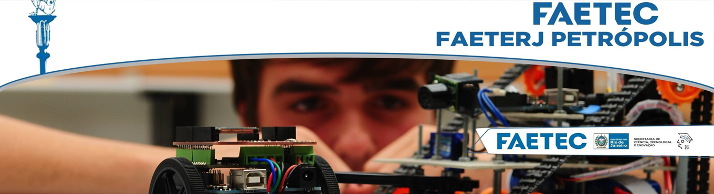
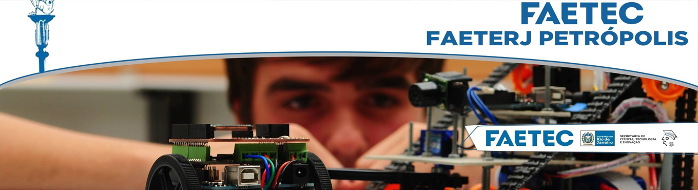

Nehum Periodo Selecionado...
Grade e Calendario academico
De Para FAETERJ
Fique por dentro de todas as novidades!!
⠀⠀⠀
Venha fazer parte da nossa Atletica
Resultado da pré-matrícula para o semestre 2021-2. Tivemos alunos excedentes apenas em BD2-N e POO-N.
Calendario Academico 2021- 2° Semestre
VER TODOS
⠀⠀⠀⠀
Centro Cultural recebe exposição com curadoria de professora da Faetec
O professor Emerson lima recebe o premio de educador do ano
Painel em Homenagem a MARCO ANTONIO RAUPP

 
